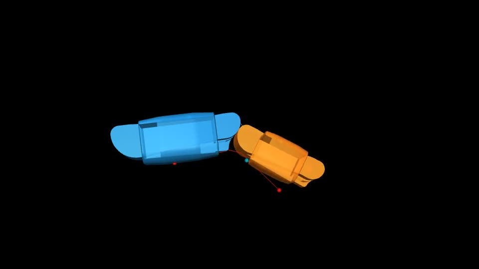

MuJoCable 技术文档¶
MuJoCable 是 MuJoCo 的无质量、单边受拉绳索传动插件。它在运动的圆柱与闭合 mesh 上计算绳路，再计算伸长、张力、摩擦传播和刚体受力。
从哪里开始¶
你的目标 |
阅读顺序 |
|---|---|
第一次运行 |
安装 → 第一个绳驱模型 → 在 viewer 中收放绳 |
给自己的机器人穿绳 |
MJCF 结构 → 参考点与 mesh 路由 → 孔口与摩擦 |
做实验与记录数据 |
传感器和 Python → 案例库 → 验证与复现 |
理解实现 |
|
排查异常 |
插件负责什么¶
MuJoCo 负责刚体质量和惯量、关节、刚体/地面接触、约束与时间积分。MuJoCable 负责指定绳路内的接触路径、拉力本构、分段摩擦与绳力映射。
绳子不会因为在画面中经过一个 geom，就自动与该 geom 接触。 必须配置相应 wrap_geoms 或真实 guide。也不要把初始化 hint、原生 seed 折线和实时求解绳路混为一谈。


适用与不适用¶
适合短绳传动、滑轮、卷扬、被动韧带、张拉结构和欠驱动机器人；可以研究路径、预紧、余绳、轴向柔顺和滑动摩擦。
当前不是有质量绳、自由悬垂绳、绳结或通用绳碰撞求解器。绳路分支初始化后保留，不自动越过拓扑分支。孔口 guide 是点式模型，不等同于有直径绳的孔壁接触。完整限制见能力边界。
原理与接口